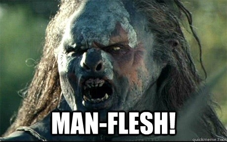

World wide web kom orginalt till genom att Tim Bernes-lee skapade den första webbsidan 1990. Han skapade även den första Versionen av HTML. 1993 kom Mosaic, den första grafiska webbläsaren ut. 1994 släppte företaget Netscape Net Navigator.Den blev senare 90-talets mest populära webbläsare. Netscape kom även att påverka andra saker längre fram, vilket jag kommer till snart 1996 publicerades version 1.0 av CSS (Cascade Style Sheets) av Håkon Wium-Lie och Bert Bos som senare kom att jobba vidare med det. Bara två år senare kom version 2.0 ut.
Javascript skapades av Brendan Eich år 1995 till version 2.0 av Net Navigator.
Javascript hette orginalt Mocha (under utvecklingen), men senare ändrade man
namnet till Javascript, eftersom det skulle låta som Java, som blivit
populärt på den tiden. Så småningom bestämde sig Microsoft för att de ville
ha nåt liknande, och skapade därmed Jscript, det mest exakta plagiatet
hittills. seriöst, när man börjar kopiera buggar vet man att man kan ha
gått för långt. För att förhindra att fler skulle få samma idée, och därmed
splittra språket, så gick Netscape till standardiseringsorganet ECMA. på
grund av detta heter numera standardversionen av Javascript Ecmascript.
Ecmascript, eller ES, används sedan runt 2010 i dagligt tal bland utvecklare
på grund av att de trycker ut nye versioner i ett väldigt högt tempo.
En nackdel med det höga tempot är att språket råkar ut för en del krångel
och problem, vilket gjorde att många tyckte illa om det fram till att det
lades till en funktion som gjorde att man kan beordra webbläsaren att ignorera
delar av språket för att förhindra dessa problem. Detta kallas i allmänhet
för det strikta läget.
En viktig sak som hänt sedan 2005 är att Javascriptmotorer numera stödjer
Just In Time (JIT)-kompilering. Sedan dess har prestandaskillnaden mellan
språk som C++ och Javascript sjunkit från 100:1 till under 5:1.
_______informationen är tagen från Andreas text om ämnet.______
https://docs.google.com/document/d/1qerFClGlTWqUBd9TI-OQg2X9E9ng0IPtvmHJG9Keiqc/edit
